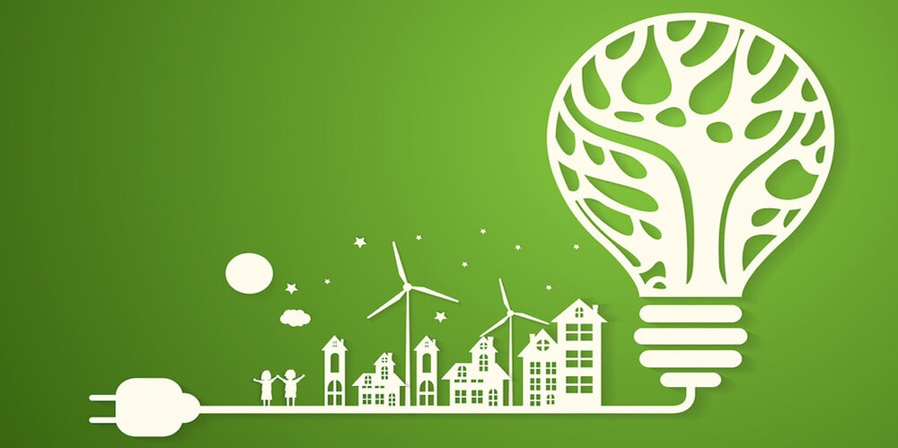

The Role of ICT in Energy Efficiency
What is ICT?
Information and communications technology (ICT) is an extensional term for information technology (IT) that stresses the role of unified communications and the integration of telecommunications (telephone lines and wireless signals) and computers as per IFGICT, as well as necessary enterprise software, middleware, storage and audiovisual, that enable users to access, store, transmit, understand and manipulate information as per the international federation of ICT.The term ICT is also used to refer to the convergence of audiovisual and telephone networks with computer networks through a single cabling or link system. There are large economic incentives to merge the telephone network with the computer network system using a single unified system of cabling, signal distribution, and management. ICT is an umbrella term that includes any communication device, encompassing radio, television, cell phones, computer and network hardware, satellite systems and so on, as well as the various services and appliances with them such as video conferencing and distance learning.
ICT is a broad subject and the concepts are evolving. It covers any product that will store, retrieve, manipulate, transmit, or receive information electronically in a digital form (e.g., personal computers including smartphones, digital television, email, or robots). Theoretical differences between interpersonal-communication technologies and mass-communication technologies have been identified by the philosopher Piyush Mathur. Skills Framework for the Information Age is one of many models for describing and managing competencies for ICT professionals for the 21st century.
Green ICT!
Green computing, green ICT as per International Federation of Global & Green ICT "IFGICT", green IT, or ICT sustainability, is the study and practice of environmentally sustainable computing or IT.The goals of green computing are similar to green chemistry: reduce the use of hazardous materials, maximize energy efficiency during the product's lifetime, the recyclability or biodegradability of defunct products and factory waste. Green computing is important for all classes of systems, ranging from handheld systems to large-scale data centers. Many corporate IT departments have green computing initiatives to reduce the environmental effect of their IT operations.
Modern IT systems rely upon a complicated mix of people, networks, and hardware; as such, a green computing initiative must cover all of these areas as well. A solution may also need to address end user satisfaction, management restructuring, regulatory compliance, and return on investment (ROI). There are also considerable fiscal motivations for companies to take control of their own power consumption; "of the power management tools available, one of the most powerful may still be simple, plain, common sense."
ICT and Energy
Information and communication technology (ICT) is one of the pillars of today’s society – it not only has a major impact on our professional and private life, it has also become one of the most important drivers of economic growth. In the past, however, economic development with its steady increase in productivity, consumption, and mobility usually went hand in hand with increasing usage of natural resources. Even though for most countries energy consumption grew slower than the gross domestic product, the world-wide yearly energy consumption steadily.High hopes rest upon ICT to reduce resource and energy consumption in other economic sectors, and thus to mitigate global warming. This could mean, for example, to improve with the help of ICT the energy efficiency in established processes (i.e., increase the ratio of a relevant target variable such as productivity or comfort to energy consumption), or to enable by ICT new concepts to generate, allocate, distribute, share, and use energy in a resource-efficient and environmentally-friendly way.
Energy Efficiency with ICT
Information and communication technology (ICT) consumes energy, but it is also an important means to conserve energy. Classically, it did so by optimizing the performance of energyusing systems and processes in industry and commerce. In the near future, ICT will also play a critical role in supporting the necessary paradigm shifts within the energy sector towards a more sustainable generation of electricity. However, with the advent of “smart” technology from the ubiquitous computing domain, further possibilities to reduce the growing energy consumption in the residential sector are now emerging. In that respect we discuss how taking the consumer “in the loop” can realize energy savings on top of efficiency gains through automated systems, and we describe a prototype application that aims at inducing a desired behavioral change by providing direct feedback on household electricity consumption.There is much talk and many studies of how ICT can make a big impact on energy efficiency, but it only truly comes alive when looking at actual examples.
- Turnkey lighting management systems based on a low power wireless mesh networking system.
- Autonomously-powered, energy harvesting sensors and communication systems for use in building automation systems.
- Smart ballast control for high intensity discharge lighting.
- LED based lights for grid and off-grid applications.
ICT solutions: in action
